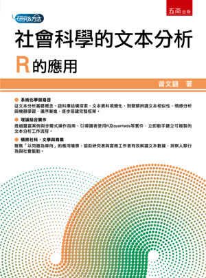

社會科學的文本分析：R的應用
Text Analysis in Social Sciences: Applications of R
Publisher
Wu-Nan Book Inc.
Publication Date
August 2025
Pages
196
ISBN
978-626-423-701-7
This book systematically introduces how to use R programming for text analysis, covering text corpus structure and preprocessing, clustering and similarity analysis, sentiment analysis, and machine learning. Using a problem-oriented practical approach, it is suitable for text data analysis in social sciences, literature, and business fields.
Text Corpus & Preprocessing
Visualization Techniques
Clustering & Similarity
Sentiment Analysis
ML for Classification
Case Studies